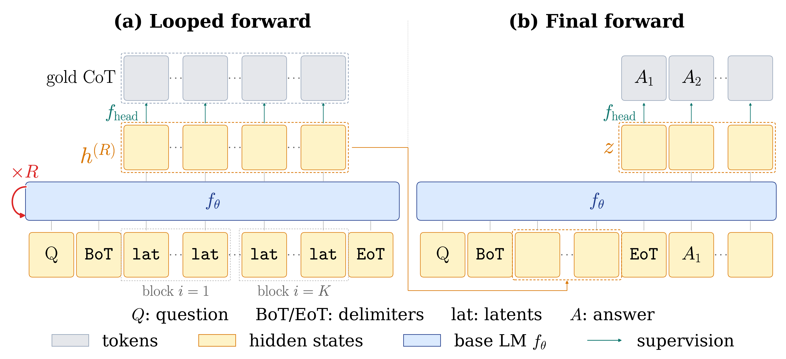

核心判断
Grigory Sapunov 的 X 线程准确抓住了论文的主结果：LOTUS 在 Llama-3.2-3B 上把 latent CoT 与显式 CoT 的 GSM8K 差距缩到 1.5 个百分点，同时把“思考阶段”延迟降到约 (1/2.5)；当显式 rationale 变成长自然语言时，思考阶段加速扩大到约 (6.9\times)。但“reasoning steps in parallel”需要加一个限定：150 个潜变量位置可以在一轮矩阵计算中并行更新，六轮递归仍然必须顺序执行。
真正的新意
并行 latent workspace、固定 step block、主 LM head 的 gold-CoT 直接监督与答案损失，被组合成一个可扩到 3B 的简单训练方案。
真正的收益
延迟不再随显式思考 token 数线性增长，而主要随循环次数 (R) 增长；GPU 擅长的宽并行被换来更短的串行链。
真正的边界
数学 benchmark、固定 (K,c,R)、全参数微调、无正式跨硬件/批量测试，也没有证明潜状态读出就是模型决策的忠实因果解释。
LOTUS 不是消灭推理成本，而是用更多并行宽度和训练监督，购买更短、更稳定的串行深度。
它试图解决的真实问题
显式 Chain-of-Thought（CoT）既是计算过程，也是输出协议。训练时，teacher forcing 可以一次并行计算整条答案的损失；推理时却必须先生成第一个思考 token，才能生成第二个，长度为 (T) 的 rationale 至少形成 (T) 次顺序解码。长推理模型变强的同时，也把延迟、KV cache、服务吞吐和输出冗余一起推高。
早期 latent CoT 试图把离散文字换成连续 hidden state。Coconut、CODI、SIM-CoT 等方法压缩了表达，却仍逐个生成 latent token；PCCoT 和 KaVa 已经用 Jacobi iteration 并行更新固定 latent 集合，但监督来自 hidden-state distillation 或压缩 KV cache。论文观察到一个尺度问题：在 GPT-2 级别，许多 latent 方法能接近显式 CoT；到 1B–3B，差距反而扩大。作者把原因归纳为两个缺口：
- 计算缺口：latent token 仍沿自回归轴顺序生成，压缩了长度却没有根治串行瓶颈。
- 监督缺口：显式 CoT 的每个位置都有 gold token，latent state 常只有答案损失或间接蒸馏信号，表示容易漂移。
LOTUS 的问题定义因此很具体：能否让潜变量在少数几轮中并行迭代，又用和显式 CoT 同样直接的 token 级目标把它们锚定住？
机制拆解：固定二维工作区 + 循环深度

潜变量前缀
默认 Llama 实验使用 (K=6)、(c=25)，即问题与答案之间放入 150 个潜变量位置。第 (i) 个 block 对齐第 (i) 个 CoT step；训练集中 99% 的 GSM8K-Aug 样本不超过六步。这里的 block 不是六个“压缩 token”，而是每步最多 25 个位置的连续表示工作区。
循环更新
问题前缀的 KV cache 只计算一次。随后，每轮把原始 latent embedding 与上一轮 hidden state 相加，再送入同一套 Transformer 权重。代码实现还包含一次初始前向，然后执行配置的循环更新；从系统角度看，关键不在如何命名这一次初始计算，而在总顺序深度由少数完整前向决定，不再由 rationale token 长度决定。
两个损失为什么缺一不可
第一项是 step loss：最终 latent 的每个位置通过同一个主 LM head预测对齐的 gold CoT token，所有位置同时计算交叉熵。它把每个位置拉向“应该出现哪些局部符号”。
第二项是 answer loss：模型在完整的 post-loop latent 配置上生成最终答案。它补上并行位置独立监督缺失的全局选择压力。总目标是答案损失与 λ 倍 step loss 之和，论文默认 λ=0.05。消融很有说明力：只保留答案损失为 63.3%，加入 post-loop 直接监督后升到 70.0%；但只用 step loss 同样不能形成可靠的全局链。
“并行推理”到底并行了什么？
最容易产生的误解，是把 LOTUS 想成一次前向就同时完成六步逻辑。实际结构有两个轴：
因此，LOTUS 的复杂度叙事不是“串行变并行”这么绝对，而是把长度依赖的串行 token 轴，替换为固定、较短的 recurrent-depth 轴。它对长自然语言 CoT 特别有利，因为显式基线的文字越啰嗦，LOTUS 的六轮预算越显得稳定；这也解释了为什么紧凑数学表达只有 2.5×，自然语言 rationale 却达到 6.9×。
这是典型的 latency–FLOPs 交换：更宽的矩阵并不免费，但更适合 GPU；单请求 latency 下降，不自动意味着总算力、能耗或高并发吞吐同比下降。论文没有报告 FLOPs、能耗、batch scaling 或多硬件曲线。
关键证据与正确读法
| 证据 | LOTUS | 对照 | 应该怎样读 |
|---|---|---|---|
| 3B GSM8K | 70.0±0.9% | 显式 CoT 71.5% | 差 1.5 点，明显优于 CODI+SIM-CoT 的 62.3%；“bridge the gap”比“完全等同”更准确。 |
| 3B OOD 平均 | 63.9±0.3% | 显式 CoT 62.1% | 在 GSM-Hard、MultiArith、SVAMP 三项平均领先 1.8 点，但训练与任务仍全部属于小学数学域。 |
| 紧凑 CoT 思考延迟 | 133.0 ms | 显式 CoT 338.8 ms | 复算为 2.55×；端到端是 181.2 vs 384.2 ms，即 2.12×。 |
| 自然语言 CoT | 68.13±0.77%；140.8 ms | 68.41±0.59%；963.6 ms | 准确率数值接近，思考延迟复算 6.84×；论文未给正式显著性检验。 |
| 公开权重 | 924/1319 = 70.05% | 论文均值 70.0% | 模型卡报告权重可复测主数字，但这不是第三方独立重训，也未覆盖三随机种子全套结果。 |
延迟测量条件是单张 NVIDIA H100 NVL、batch size 1、greedy decoding。这个设置与交互式单请求场景高度相关，却不足以证明生产服务里的吞吐或 P99 尾延迟。显式 CoT 的速度还取决于输出长度分布、停止条件、推理引擎、KV cache 策略和 speculative decoding；LOTUS 的速度取决于 150 个 latent 位置能否高效占满硬件。
消融比 headline 数字更有价值
深度不足会直接崩溃：分别训练 (R=2,3,4,5,6) 的模型，GSM8K 为 14.6%、23.2%、52.6%、68.1%、70.0%。宽度也存在阈值：(c=1,5,10,25,30) 对应 49.7%、67.5%、68.4%、70.0%、70.0%。这说明 LOTUS 不是把六个自然语言步骤无损“压成六个向量”；它需要足够大的并行工作区和足够深的迭代，才有能力承载任务。
另一个重要结果是监督路由：post-loop 主 LM head 为 70.0%，per-iteration 主 head 为 68.2%；辅助 decoder 的最佳方式反而是 per-iteration，为 69.9%。这支持论文的工程结论——直接主 head 方案更简单且跨模型规模更稳——但并不能推出它在所有任务上都优于辅助 decoder。
潜状态“可读”，但不等于忠实解释
由于 step loss 直接经过主 LM head，研究者可以把 post-loop latent 投影回词表。在 1,319 道 GSM8K test 上，gold CoT token 位于 top-1 的比例为 70.9%，top-5 为 85.8%。这证明 latent state 不是完全脱离词表的黑箱噪声，且训练目标确实建立了 step alignment。
论文还构建了 341 道多路径样本：为训练题生成并验证一个未用于训练的替代解法，再剔除问题、答案和已训练路径中共享的数字。对只出现在未见路径中的中间数，LOTUS 有 15.3% 能在某个位置成为 top-1，64.0% 进入 top-5；其 NLL 明显好于随机数字。这说明 latent workspace 对替代中间量保留了概率质量，不只是逐字复诵唯一 gold chain。
“可被线性 LM head 读出”只说明表征中包含这些 token 信号；“替代数字进入 top-k”只说明相关信息出现。它们都没有证明这些信号是最终答案的必要原因，也没有排除 probe 读取到伴随特征。要证明忠实性，还需要干预 latent block、交换或遮蔽中间量，并观察答案是否按机制预测改变。
论文附录其实给出了最好的反例。Carla 下载题中，潜状态已出现 80、100、40、20 等正确中间数，最终答案仍从 160 偏到 180；Melanie 吸尘器题中，有效的 (5\to10\to12\to18) 子链在后段浮现，模型却输出 30。问题不只是“有没有正确局部量”，而是如何在联合状态里选择、组合并提交一致路径。
代码与复现审计
已核验事实官方仓库提供训练、评测、数据预处理、Llama/GPT-2 配置与 MIT 许可证；Llama-3.2-3B 的 LOTUS 和 LOTUS+CODI 权重已公开。主配置与论文一致：全参数微调、30 epoch、总 batch 128、AdamW、bf16、学习率 5×10−5、K=R=6、c=25、step loss 权重 0.05。
代码审计推断循环实现确实复用问题前缀 KV cache，并在每轮把原始 latent embedding 与上一轮 hidden state 相加；最终答案直接条件于 post-loop states，latent token 的离散 readout 只用于训练或分析。公开 3B 权重不能直接交给普通文本生成管线得到 LOTUS 行为，必须由仓库的 wrapper 插入 latent prefix 并执行循环；模型卡正文写明了这一点，页面自动生成的通用 pipeline 示例则容易误导。
尚未独立复现仓库没有随附论文所有随机种子日志、逐项原始预测和完整 timing 产物。本次完成源码/配置审计、公开权重元数据核对和表格数值复算，也验证核心 Python 文件可解析；没有在同规格 H100 上重训 3B 或重跑 1,319 道评测，因此准确率与速度仍应标为发布方报告。
“超过六步自动回退”存在实现语义缺口
论文和线程说，超过 (K=6) 的推理会回退到自回归完成尾部。训练数据代码确实在替换前六个 gold steps 后，把更长的 gold CoT 尾部保留为可见 token；但公开评测脚本在推理时只拼接固定 latent prefix，随后直接生成答案，并没有检测“这道题需要第七步”或切换到显式 CoT 尾部的控制逻辑。
因此更谨慎的表述是：训练流程能处理带显式尾部的长样本，但公开推理实现尚未展示一个可部署的自适应 fallback。这不推翻主表结果，因为 GSM8K-Aug 的 99% 样本在六步以内；它会影响把方法外推到代码、搜索或证明等长短差异更大的任务。
关键边界与反例
任务边界
训练、验证与 OOD 测试都围绕学校数学。GSM-Hard、MultiArith、SVAMP 改变分布，却没有改变推理世界；代码执行、开放搜索和长期规划仍未测试。
预算边界
(K,c,R) 都是固定超参。少于训练深度时性能迅速下降，多跑一轮也不再增益；这不是按问题难度自然伸缩的 test-time compute。
监督边界
需要 gold CoT 并先做显式 CoT checkpoint，再进行 30 epoch 全参数微调。高质量推理轨迹仍是关键成本，且可能把人类书写格式固化进潜空间。
- 公平性：同 (R=6) 顺序预算下对 CODI/SIM-CoT 的比较较公平；与 PCCoT/KaVa 的 3 轮预算则不是等计算量比较，论文已把它们分表处理。
- 统计性：LOTUS 主表给三随机种子均值与标准差，显式 CoT 参考值未给同表方差；“on par”更像工程判断，不是完整假设检验。
- 效率性：报告 latency 而非总 FLOPs/焦耳。150 个位置 × 多轮完整模型前向可能提高总计算，尤其在硬件无法充分利用宽并行时。
- 安全与可审计性：不输出 CoT 能减少文字冗余和泄漏，却也删除了一个人类可检查接口；LM-head probe 目前不足以替代行为审计。
独立 insight：它更像并行算法编译器，而不是“无声 CoT”
1. 核心资源从 token budget 变成 depth × workspace
显式 CoT 用一条可变长 token 流表达计算；LOTUS 用固定深度 (R) 和固定宽度 (Kc) 表达计算。二者更像两种计算图，而不只是两种语言格式。工程上不应只比较“用了多少 reasoning tokens”，而应同时测顺序深度、并行宽度、FLOPs、内存带宽、batch throughput 和 tail latency。
2. Gold CoT 在这里是训练脚手架，不是推理接口
LOTUS 并没有证明自然语言是最优内部算法。它证明的是：用自然语言 CoT 提供稠密、位置对齐的课程，可以训练一个最终不输出这些文字的连续工作区。下一步最有价值的问题不是继续模仿更长的人工 rationale，而是让模型从可验证答案、程序执行或形式证明中学习比人类叙述更适合并行硬件的 latent algorithm，同时保留可干预的检查点。
3. 固定六轮的优势同时也是分布外风险
固定深度让 latency 可预测，这是部署优势；它也让难题悄无声息地在预算内失败。显式 CoT 至少可以继续生成，LOTUS 当前缺少可靠的“我还没想完”信号。生产化版本需要 learned halting、难度路由、置信度校准和可观测 fallback；否则平均延迟漂亮，复杂样本的尾部正确率可能反而更难诊断。
4. 可解释性的正确目标应是可干预，而不只是可读
LM head 读出 70.9% gold token 很有用，因为它提供了诊断表面；但真正的审计接口应回答：遮蔽 block 3 会不会破坏第三步？把替代路径的中间量注入某个 block，答案会不会按预测变化？错误样本中，究竟是局部量缺失、联合选择失败，还是答案 decoder 忽略了正确状态？从“readout”走向“causal intervention”，才可能把 latent reasoning 变成可验证系统。
如果要在代码或 Agent 场景验证 LOTUS 思路，应先选具有确定 verifier、明确阶段结构、长 CoT 延迟明显的任务；同时报告 quality–latency–FLOPs 三维曲线，加入动态停止与显式 fallback，并对 latent block 做干预实验。只复现 GSM8K 准确率并不足以证明通用价值。
术语对齐
证据边界与资料索引
本文以 2026-07-13 的 arXiv v2、2026-07-18 的解读线程及截至 2026-07-20 可见的官方代码和模型卡为准。论文正文、附录、训练配置、推理路径与公开模型元数据已经核对；headline 比例已按表格独立复算。未进行 3B 重训、H100 全量评测或第三方跨硬件复现，因此准确率、延迟和多随机种子稳定性仍属于发布方报告。X 页面和在线仓库可能继续修订。
- Grigory Sapunov：LOTUS 10 条解读线程
- Ying Fan：论文发布线程与作者补充回复
- Bridging the Gap Between Latent and Explicit Reasoning with Looped Transformers（arXiv v2）
- LOTUS 官方代码与评测配置
- LOTUS Llama-3.2-3B 公开权重与模型卡
- PCCoT：Parallel Continuous Chain-of-Thought with Jacobi Iteration
- CODI：Compressing Chain-of-Thought into Continuous Space via Self-Distillation
- SIM-CoT：Supervised Implicit Chain-of-Thought
- KaVa：Latent Reasoning via Compressed KV-Cache Distillation
- Coconut：Training Large Language Models to Reason in a Continuous Latent Space